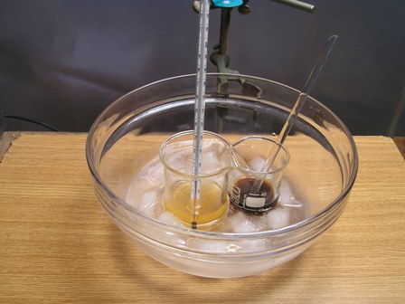
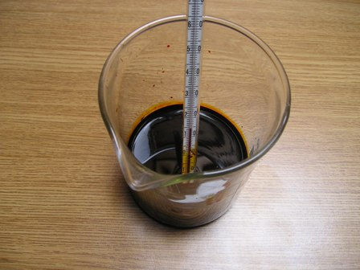
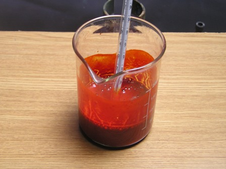
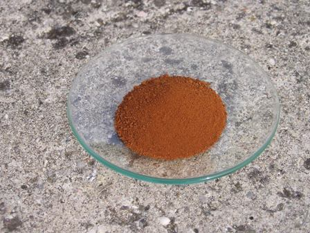
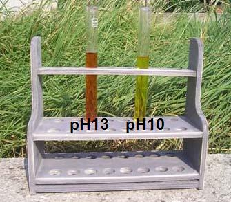

Dopo qualche divagazione "elettrostatica" (ma fatta con molta soddisfazione!) torniamo a noi, ovvero alla chimica sperimentale.
Attore protagonista odierno è personaggio secondario della saga dei coloranti azoici derivati dall'acido solfanilico.
L'acido solfanilico (p-aminobenzensolfonico NH2-C6H4-SO2-OH) dà origine ad una notevole serie di prodotti intensamente colorati in genere nei toni rossi, i più noti dei quali sono il metilarancio (solfanilico + dimetilanilina) e l'Arancio II (solfanilico + beta-naftolo).
Ho provato a fare un azoico meno conosciuto, derivato dalla copulazione (termine di chimica organica...) dell'acido solfanilico con la resorcina; il colorante risultante era impiegato in passato per la tintura di lana e seta e addirittura come colorante alimentare (E103, ora proibito): si tratta della crisoina [Sodio p-(2,4-diidrossifenilazo)-benzensulfonato].

Materiale occorrente
- Acido solfanilico p-NH2-C6H4-SO2-OH
- Resorcina m-HO-C6H4-OH
- Sodio nitrito NaNO2
- Acido cloridrico
- Sodio idrossido
- Sodio cloruro
Vetreria opportuna e ghiaccio
- In un becker da 100 ml sciogliere 2,5 g di acido solfanilico e 1 g di NaOH in 40 ml di acqua.
Aggiungere 1,3 g di NaNO2 sciolti in 5 ml di acqua e portare tutto a circa 2-3° con bagno di acqua e ghiaccio. Aggiungere goccia a goccia HCl al 25% fino a reazione acida, sempre mescolando energicamente ed evitando che la temperatura salga oltre i 5°.
In un becker da 50 ml preparare intanto una soluzione di 1,6 g di resorcina e 1,2 g di NaOH in 15 ml di acqua, posti sempre nel medesimo bagno di acqua e ghiaccio.
Mescolando, aggiungere pian piano la seconda soluzione alla prima: il liquido assumerà immediatamente prima una colorazione aranciata e poi sempre più scura fino a copulazione avvenuta.

Il problema maggiore a questo punto è che la separazione, perchè la soluzione alcalina di crisoina e la crisoina stessa è solubile in acqua. Innanzitutto neutralizzare cautamente con HCl e portare fino a reazione acida, quindi aggiungere NaCl solido fino a saturare la soluzione (ne serve circa una ventina di g), mescolando con pazienza fino a dissoluzione completa del sale, eventualmente aggiungendone.
La maggior parte della crisoina precipita sotto forma di polvere rosso-arancio; lasciare in riposo un paio d'ore e poi filtrare su buchner sotto buona aspirazione perchè il colorante tende fortemente ad intasare il filtro formando una massa appiccicosa.
Lavare con soluzione satura di sale, aspirando bene per eliminare quanto più liquido possibile e poi essicare lentamente e con fatica all'aria.
Purtroppo il colorante rimane un po' impregnato del cloruro di sodio rimasto nella poca acqua sul filtro; non è molto ma comunque il prodotto è leggermente "salato".
Ho provato a purificare per soluzione ma è quasi impossibile perchè la crisoina non è solubile nei solventi apolari; sicuramente una buona passata nel soxhlet con etanolo riuscirebbe a risolvere il problema, ma per ora ho tenuto il prodotto così com'è.

La crisoina secca si presenta come una polvere color ruggine, discretamente solubile in acqua e in etanolo; tinge i tessuti in colore dai toni caldi dal giallo all'ocra ed è anche un indicatore di pH nel range basico 11-12,7 (giallo per pH <11 e rosso per pH >12,7

2 commenti